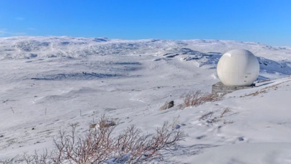
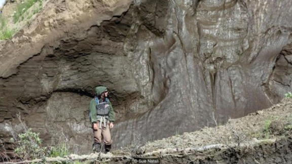
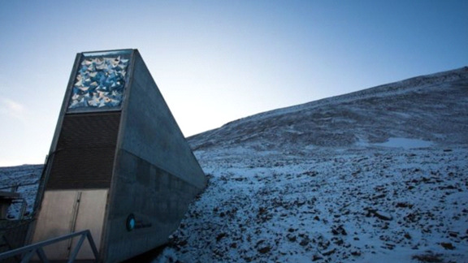

Evaluation Warning: The document was created with Spire.Doc for .NET.
Bắc Cực tan băng khiến nhiều virus cổ đại chết chóc thoát ra
2 tháng 7 2019

Vào năm 2012, Sue Natali lần đầu tiên đến Duvanny Yar, Siberia.
Lúc đó là nghiên cứu sinh sau tiến sĩ nghiên cứu về tác động của băng vĩnh cửu bị tan chảy do biến đổi khí hậu, bà đã thấy những bức ảnh về nơi này nhiều lần.
Đối phó thiên thạch trước khi nó đâm vào Trái Đất
Bảo vệ môi trường bằng cách trả tiền ảo để dân dọn rác
Dùng cỏ dại để chống biến đổi khí hậu
Sự tan băng nhanh chóng ở Duvanny Yar đã gây ra một vụ sụp lớn trên mặt đất - 'siêu sụt đất' - giống như một hố sụt khổng lồ ở giữa lãnh nguyên Siberia. Nhưng không gì bằng việc bà tới tận mắt chứng kiến.
Lượng carbon khổng lồ
"Thật khó tin, thực sự đáng kinh ngạc," bà nhớ lại trong khi nói chuyện với tôi từ Trung tâm Nghiên cứu Woods Hole, tiểu bang Massachusetts, nơi bà là một nhà khoa học.
"Tôi vẫn cảm thấy ớn lạnh khi nghĩ về nó... Tôi không thể tin vào tầm vóc của sự việc: những núi băng sập xuống to như tòa nhà cao tầng… và khi bạn bước dọc theo bạn sẽ thấy những thứ nhìn như là khúc gỗ nhô ra ngoài khối tuyết vĩnh cửu. Nhưng chúng không phải là khúc gỗ mà là xương của voi ma mút và các động vật khác thuộc kỷ Pleistocene."
Những gì Natali mô tả là những tác động thấy rõ, gay cấn của vùng Bắc Cực đang ấm lên nhanh chóng. Lớp băng vĩnh cửu - tức là mặt đất và đất thịt đóng băng vĩnh viễn cho đến nay - đang tan dần và hé lộ những bí mật ẩn giấu. Bên cạnh các hóa thạch Pleistocene là lượng khí thải carbon và metan khổng lồ, thủy ngân độc hại và các bệnh thời xa xưa.

Tốc độ tan chảy rất nhanh của tầng băng vĩnh cửu đã gây ra các vụ sụt khổng lồ ở vùng Bắc Cực
Lớp băng vĩnh cửu giàu hữu cơ chứa khoảng 1.500 tỷ tấn carbon.
Những nơi trên Trái Đất mà như trên sao Hỏa
Con người cần 'tẩy trắng' mây gấp?
Bí ẩn vụ nổ khổng lồ ở Siberia
"Đó là lượng nhiều khoảng gấp đôi lượng khí carbon trong khí quyển và nhiều gấp ba lần lượng carbon được lưu trữ trong tất cả các khu rừng trên thế giới," bà Natali nói.
Bà giải thích rằng từ 30% đến 70% băng vĩnh cửu có thể tan chảy trước năm 2100, tùy thuộc vào mức độ chúng ta ứng phó với biến đổi khí hậu hiệu quả như thế nào.
"Mức 70% là nếu chúng ta vẫn tiếp tục như hiện nay, nếu chúng ta tiếp tục đốt nhiên liệu hóa thạch ở mức hiện tại, và 30% là nếu chúng ta giảm đáng kể lượng phát thải nhiên liệu hóa thạch."
"Trong 30-70% băng vĩnh cửu bị tan chảy đó, carbon bị giữ trong những vật chất hữu cơ bắt đầu bị các vi khuẩn phân giải, do chúng sử dụng nó làm nhiên liệu hay năng lượng và giải phóng carbon dưới dạng CO2 hoặc methane."
Khoảng 10% carbon được giải phóng sẽ thoát ra dưới dạng CO2, lên tới 130-150 tỷ tấn. Con số này tương đương với tổng tỷ lệ phát thải hiện tại của Hoa Kỳ mỗi năm cho đến năm 2100.
Băng tan trên thực tế đưa đến một quốc gia mới ở vị trí thứ hai trong danh sách phát thải nhiều nhất và quốc gia đó hiện không được tính đến trong các mô hình của IPCC (Ủy ban Quốc tế về Biến đổi Khí hậu).
"Người ta nói về một quả bom carbon," bà Natali nói. "Trong khung thời gian địa chất, quá trình thải ra này không hề chậm. Đó là một lượng carbon bị giữ lại và không được tính vào ngân sách carbon để giữ mức tăng nhiệt độ dưới hai độ C."
Băng tan chóng mặt
Mùa đông ở Bắc Bán cầu năm 2018-2019 bị bao trùm trong các dòng tít báo về 'lốc xoáy vùng cực', khi nhiệt độ giảm mạnh bất thường ở tận sâu vào phía nam Bắc Mỹ.
Ở South Bend, tiểu bang Indiana, nó xuống mức -29C vào tháng 1/2019, thấp gần gấp đôi so với kỷ lục trước đó của thành phố vào năm 1936.
Tuy nhiên, điều mà những câu chuyện như vậy che giấu, tuy nhiên, là điều ngược lại đã xảy ra ở miền Bắc xa xôi, xa hơn cả Bắc Cực.
Tháng 1/2019 cũng là lúc băng trên biển ở Bắc Cực chỉ đạt trung bình 13,56 triệu kilômét vuông, tức là thấp hơn mức trung bình dài hạn trong giai đoạn 1981-2010 khoảng 860.000 kilômét vuông, và chỉ hơi cao hơn một chút so với mức thấp kỷ lục đạt được trong tháng 1/2018.
Lớp đá tan chảy sẽ làm khí methane thoát ra, càng làm đẩy nhanh tiến trình ấm nóng toàn cầu
Vào tháng 11, khi nhiệt độ đáng lẽ phải là -25C, thì mức nhiệt độ 1,2 độ C trên mức đóng băng đã được ghi nhận tại Bắc Cực. Vùng Bắc Cực đang nóng lên nhanh gấp đôi so với phần còn lại của thế giới (một phần là do mất khả năng phản xạ tia mặt trời).
Con người trông sẽ thế nào sau 1 triệu năm nữa?
Vệ tinh do thám phát hiện rừng thiêng ở Ethiopia
Bí quyết sống lâu nhất, lên cao nhất
"Chúng ta đang chứng kiến băng vĩnh cửu đang tan với tốc độ gia tăng nhanh chóng," bà Emily Osborne, quản lý của Chương trình Nghiên cứu Bắc Cực (NOAA), và là chủ biên của Báo cáo Bắc Cực, một nghiên cứu môi trường hàng năm về Bắc Cực được đồng nghiệp đánh giá, nói.
Do hậu quả trực tiếp của nhiệt độ tăng cao, bà nói, băng vĩnh cửu đang tan và "cảnh quan vật lý đổ sụp… mọi thứ đang thay đổi rất nhanh, và theo cách mà các nhà nghiên cứu thậm chí còn chưa dự đoán tới".
Tiêu đề của Báo cáo Bắc Cực 2017 không hề có sự dè dặt: "Bắc Cực không thấy có dấu hiệu quay trở lại thành khu vực băng giá lâu dài."
Một nghiên cứu do Giáo sư Hanne Christiansen, phó trưởng khoa giáo dục tại Trung tâm Đại học Svalbard, Na Uy, làm đồng tác giả, đã nghiên cứu nhiệt độ lớp băng giá ở độ sâu 20 mét (đủ xa để không bị ảnh hưởng bởi những thay đổi theo mùa nhất thời) và nhận thấy nhiệt độ đã tăng lên đến 0,7 độ C kể từ năm 2000.
Christiansen, đồng thời cũng là chủ tịch Hiệp hội Băng vĩnh cửu Quốc tế, nói với tôi rằng "nhiệt độ đang tăng lên bên trong lớp băng vĩnh cửu ở tốc độ tương đối cao, và dĩ nhiên, những gì đã bị đóng băng vĩnh viễn trước đây có thể thoát ra".
Christiansen cho biết vào năm 2016 nhiệt độ mùa thu ở Svalbard vẫn ở trên mức 0 độ C suốt tháng 11, "lần đầu tiên xảy ra điều này theo số liệu mà chúng ta có trở lại đến năm 1898".
"Sau đó, khu vực trải qua lượng lớn mưa - mưa ở đây thường là tuyết, đã có những trận lở bùn băng ngang đường trong 100 mét, chúng tôi phải sơ tán một số khu dân cư."
Chết chóc trở lại
Sự thay đổi nhanh chóng trong băng vĩnh cửu Bắc Mỹ cũng đáng báo động không kém.
"Ở một số nơi ở Alaska thuộc Bắc Cực, bạn bay qua một vùng lỗ chỗ đất và hồ được hình thành do đất sụt," bà Natali, người đã đi thực địa từ Siberia đến Alaska, nói. "Nước gần bề mặt bây giờ trở thành ao".
Nhiều hồ trong số này sủi bọt khí methane, vì các vi khuẩn đột nhiên có được đại tiệc chất hữu cơ từ xa xưa để đánh chén, qua đó giải phóng khí methane như sản phẩm phụ.
"Chúng tôi thường đi bộ qua các hồ bởi vì nó rất nông và ở một số nơi giống như bạn ở trong bồn nước nóng vậy, có rất nhiều bong bóng khí," Natali nói.
Nhưng khí methane và CO2 không phải là những thứ duy nhất thoát khỏi mặt đất đóng băng.
Tầng băng vĩnh cửu tan chảy khiến khuẩn than ở Siberia sống lại và thoát ra môi trường
Vào mùa hè năm 2016, một nhóm những người chăn tuần lộc du mục bắt đầu ngã bệnh vì một căn bệnh bí ẩn.
Tin đồn bắt đầu lan truyền về 'Dịch Siberia', lần cuối cùng xuất hiện ở vùng này vào năm 1941. Khi một cậu bé và 2.500 con tuần lộc chết, căn bệnh này mới được xác định: bệnh than. Nguồn gốc của bệnh là xác tuần lộc rã đông, nạn nhân của dịch bệnh than từ 75 năm trước.
Báo cáo Bắc Cực năm 2018 suy đoán rằng, "các bệnh như bệnh cúm Tây Ban Nha, bệnh đậu mùa hoặc bệnh dịch hạch đã bị xóa sổ có thể bị giữ lại trong lớp băng vĩnh cửu".
Một nghiên cứu của Pháp năm 2014 lấy một virus 30.000 năm tuổi đóng băng trong lớp băng vĩnh cửu và làm ấm nó trở lại trong phòng thí nghiệm. Ngay lập tức nó sống trở lại 300 thế kỷ sau.
Thủy ngân cũng đang xâm nhập vào chuỗi thức ăn, nhờ vào sự tan băng vĩnh cửu.
Bắc Cực là nơi có nhiều thủy ngân nhất trên hành tinh. Cơ quan Khảo sát Địa chất Hoa Kỳ ước tính có tổng cộng 1.656.000 tấn thủy ngân bị cầm giữ trong băng vùng cực và băng vĩnh cửu: gần gấp đôi lượng toàn cầu ở tất cả các vùng đất, đại dương và bầu khí quyển.
Natali giải thích rằng, "thủy ngân thường kết hợp với vật liệu hữu cơ ở những nơi bạn có hàm lượng chất hữu cơ cao... Cơ thể sinh vật không loại bỏ nó, do đó nó tích lũy sinh học trong mạng lưới thức ăn."
"Băng vĩnh cửu gần như là cơn bão hoàn hảo - bạn có rất nhiều thủy ngân trong băng vĩnh cửu, chúng được giải phóng vào các vùng đất ngập nước, đó là môi trường thích hợp để các sinh vật tiếp nhận chúng, và sau đó đi lên mạng lưới thức ăn."
"Đó là điều lo ngại đối với động vật hoang dã, con người và ngành công nghiệp đánh bắt cá thương mại."
Bắc Cực sẽ xanh hơn?
Có những điểm tích cực nào khi Bắc Cực tan băng hay không? Liệu Bắc Cực xanh hơn có thể bắt đầu thấy thêm nhiều cây cối và thực vật bén rễ hơn, giữ lại nhiều carbon hơn và tạo ra những bãi cỏ chăn thả động vật mới hay không?

Vào năm 2016, Phòng trữ hạt Doomsday Vault tại khu Bắc Cực thuộc Na Uy, nơi lưu trữ hàng triệu loại hạt giống khác nhau cho tương lai nhân loại, đã bị nước băng tan chảy tràn vào
Osborne đồng ý rằng "Bắc Cực đang phủ xanh". Nhưng bà nói thêm rằng các nghiên cứu về quần thể động vật thực sự cho thấy nhiệt độ ấm hơn cũng làm tăng mức độ phủ sóng của virus và bệnh tật, vì vậy chúng ta đang chứng kiến nhiều con tuần lộc trở nên ốm yếu hơn do khí hậu ấm lên.
Đó cũng không phải là môi trường phù hợp để phát triển mạnh ở nhiệt độ ấm.
Natali cũng nói rằng nhiều nơi đang trải qua thời kỳ lãnh nguyên chuyển màu nâu: nhiệt độ cao hơn khiến nước mặt bốc hơi vào khí quyển, làm cho thực vật tuyệt diệt. Các khu vực khác thì bị ngập lụt đột ngột do đất sụp.
"Nó không xảy ra vào năm 2100 hay 2050 mà là bây giờ," Natali nói. "Bạn nghe người ta nói, 'chúng tôi có thời từng hái quả việt quất ở đó', bạn nhìn qua và nói đó nay chỉ còn là một vùng ngập nước."
Có rất nhiều thứ chúng ta có thể làm, Natali nói. Số phận của Bắc Cực không phải là một kết cục đã được báo trước: "Những hành động của cộng đồng quốc tế sẽ có tác động đáng kể đến lượng carbon được giải phóng và lượng băng vĩnh cửu tan chảy."
"Chúng ta cần giữ lại càng nhiều băng vĩnh cửu càng tốt. Và chúng ta có một số kiểm soát. Lượng phát thải không thể nào 'vẫn như vậy'. Bắc Cực phụ thuộc vào điều đó. Và chúng ta phụ thuộc vào Bắc Cực."